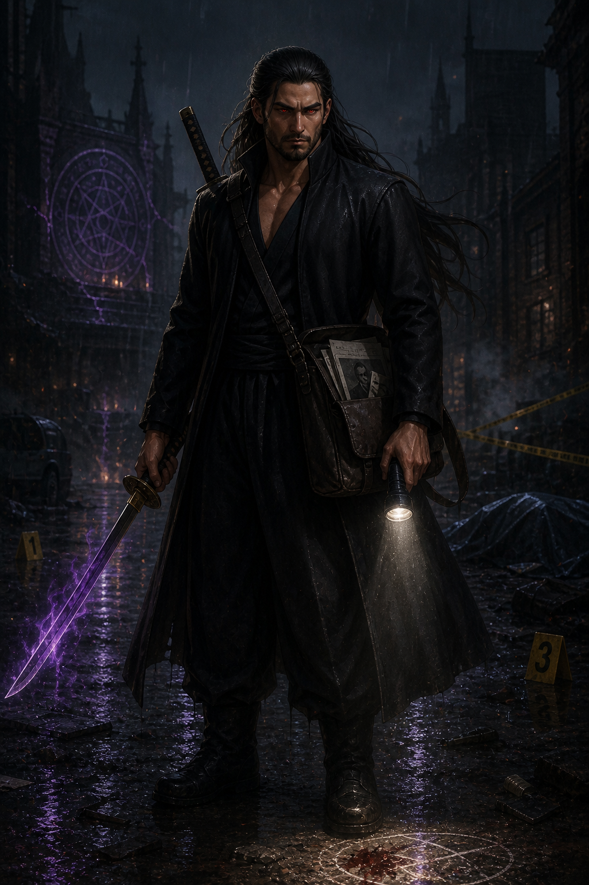

A verdade por trás do impossível
Veríssimo reconheceu em Alucard a combinação rara de competência, resistência e experiência direta com o paranormal.

Uma perda sobrenatural destruiu sua vida. A busca por respostas o levou até Veríssimo — e até uma realidade que a maioria jamais deveria conhecer.
Antes da Ordem, existia um homem tentando compreender uma ausência impossível.
Alucard perdeu sua esposa por causa de algo sobrenatural. Não havia explicação racional capaz de encerrar o caso, apenas vestígios que pareciam desafiar a lógica e uma certeza: aquilo que a levou ainda existia.
Como investigador forense, ele aprendeu a ouvir o que os lugares silenciam. Marcas, resíduos e padrões tornaram-se uma linguagem. Sua dor não desapareceu; converteu-se em método, disciplina e uma necessidade implacável de descobrir a verdade.
Quanto mais investigava, mais percebia que o mundo conhecido era apenas uma camada protegendo algo antigo e hostil.
Veríssimo reconheceu em Alucard a combinação rara de competência, resistência e experiência direta com o paranormal.
Na organização, Alucard encontrou acesso aos arquivos e instrumentos capazes de dar nome ao que havia destruído sua vida.
Uma equipe foi montada para sua primeira operação. Para Alucard, não seria apenas trabalho: seria o primeiro passo em direção às respostas.
Reconstrói acontecimentos por meio de evidências que outros ignoram.
Une lâminas e energia púrpura contra manifestações hostis.
Cada caso pode revelar uma nova peça sobre a morte de sua esposa.
Ao lado de uma equipe que ainda precisa aprender a confiar, Alucard entra no escuro levando consigo método, luto e a promessa silenciosa de que nenhum vestígio será esquecido.